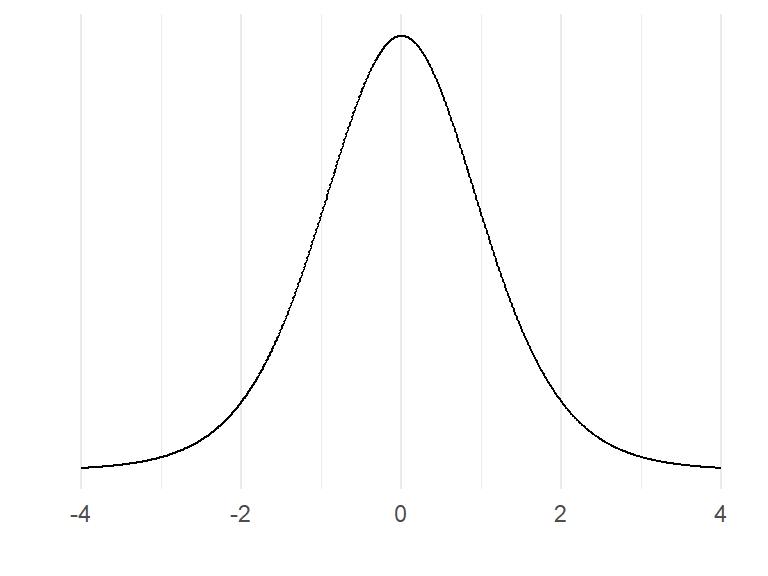
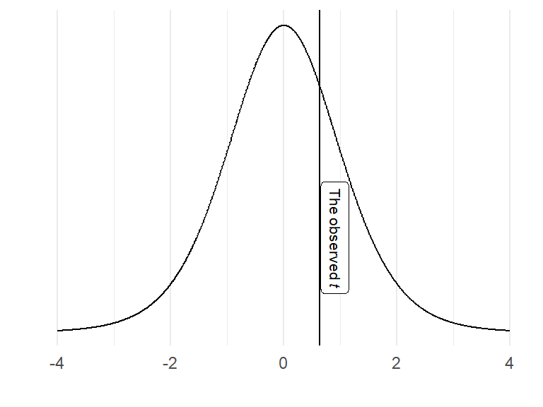
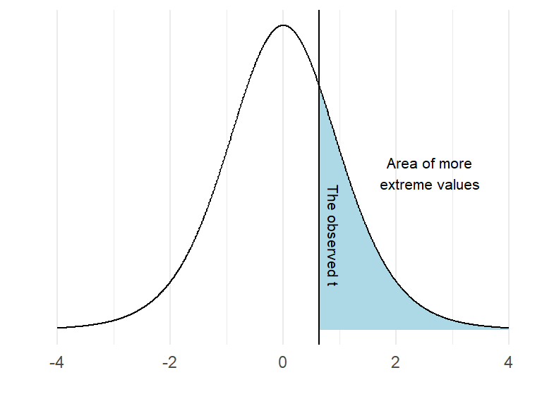
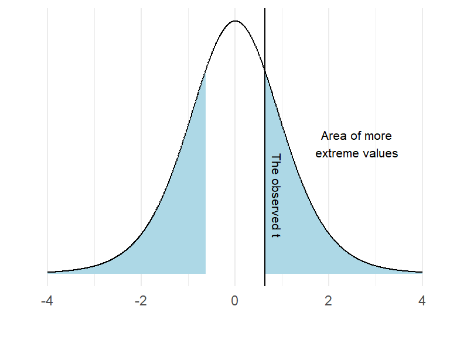

17 What is the p-value?
Consider the sampling distribution. This is an imaginary distribution of e.g. sample means gathered from repeated sampling from a population of numbers. Let’s say that our null-hypothesis (\(H_0\)) is that the mean of a population is zero. We draw a sample of \(n=10\) and it turns out that it is not zero, it is about 1. We calculate the standard deviation of our sample, it is 0.5.
Based on these number, we can calculate a sample statistic, a t-value
\[t = \frac{m - \mu}{s/\sqrt{n}}\]
where \(m\) is our sample mean, \(\mu\) is the hypothesized mean, \(s\) is our sample standard deviation and \(n\) is the sample size. \(t\) is the sample statistic. As we have covered in the previous chapter, we do not know the true variation in the imaginary distribution of samples, \(s\) is our best guess of the population standard deviation. Using \(s\) we can model the imaginary sampling distribution.
It would look something like this:
The distribution above is the t-distribution with 10-1 degrees of freedom. Our calculated sample statistic can be inserted in the distribution.

Using the calculated t-value we may answer questions like: “If the null-hypothesis is true, how often would we observe our t-value, or an even more extreme value? We can calculate this from the imaginary distribution as the area under the curve above our value.

In R, this probability can be calculated using the pt() function:
t <- (1-0) / (0.5 * sqrt(10))
pt(t, df = 10-1, lower.tail = FALSE)
It turns out that 27% of the distribution can be found in the blue shaded area. We have now completed a one-sample t-test. However, we have to look again at our null-hypothesis which states \(H_0 = 0\). There are two ways to disprove this hypothesis. We may find out that the value is lower or higher than 0. To account for both possibilities we calculate a “two sided p-value”. In practice we calculate the area under the curve above and below values corresponding to our observed distance from 0.
2 * pt(t, df = 10-1, lower.tail = FALSE)

As the area under the curve in the blue area is 54% of the distribution we may make a statement such as: “If the null-hypothesis is true, our observed value, or a value even more distant from 0 would appear 0.54% of the times upon repeated sampling”.
We can not reject the null hypothesis as the result of our test is (our t-value, or a more extreme value) is so commonly found if the \(H_0\) distribution is true.
You sample a new mean from \(n=10\) of 1.2, the standard deviation is 0.55. Calculate the t-statistic and the p-value with the \(H_0 = 0\).
Here is a possible solutionSide note: Printing numbers in R: Sometimes, a ridiculous number appear in your console such as \(4.450332e-05\). This is actually \(0.00004450332\) written in scientific notation.
e-05can be read as \(10^{-5}\). Rounding numbers in R is straight forward. Just useround(4.450332e-05, digits = 5)to round the number to 5 decimal points. However, you will still see the number in scientific notation. If you want to print the number with all trailing zeros you can instead usesprintf("%.5f", 4.450332e-05). This function converts the number into text and print what you want. The “%.5f” sets the number of decimal points to 5. This is confusing, I know!
17.1 p-values from two sample comparisons
In a two sample scenario, we can model the null-hypothesis using re-shuffling of the data.
We sample two groups, one group has done resistance-training, the other group endurance training. We want to know if you get stronger if you do strength training as compared to endurance training. We measure the groups after an intervention. They were similar prior to training so we think that it is OK to measure the post-training values of 1RM bench press.
These are:
strength.group <- c(75, 82.5, 87.5, 90, 67.5, 55, 87.5, 67.5, 72.5, 95)
endurance.group <- c(67.5, 75, 52.5, 85, 55, 45, 47.5, 85, 90, 37.5)We can calculate the difference between the groups as:
mean.difference <- mean(strength.group) - mean(endurance.group)We can simulate the null-hypothesis (\(H_0\)) by removing the grouping and sample at random to two groups. Read the code below and try to figure out what it does before you run it:
set.seed(123)
results <- data.frame(m = rep(NA, 1000))
for(i in 1:1000){
# Here we combine all observations
all.observations <- data.frame(obs = c(strength.group, endurance.group)) %>%
# based on a random process each iteration of the for-loop assign either endurance or strength to each individual
mutate(group = sample(c(rep("strength", 10),
rep("endurance", 10)),
size = 20,
replace = FALSE)) %>%
group_by(group) %>%
summarise(m = mean(obs))
# calculate the difference in means and store in the results data frame
results[i, 1] <- all.observations[all.observations$group == "strength", 2] - all.observations[all.observations$group == "endurance", 2]
}
results %>%
ggplot(aes(m)) + geom_histogram(fill = "lightblue", color = "gray50", binwidth = 1) +
geom_vline(xintercept = mean.difference) +
labs(x = "Mean difference",
y = "Count") +
theme_minimal()What does the graph above show? As the reshuffle process was done 1000 times we can count the number of means more extreme than the mean that we did observe.
length(results[results$m > mean.difference,]) / 1000The above code calculates the proportion of mean differences greater than the observed difference that occurred when we re-shuffled the groups by chance.
# An illustration of the above
results %>%
mutate(extreme = if_else(m > mean.difference, "More extreme", "Less extreme")) %>%
ggplot(aes(m, fill = extreme)) + geom_histogram(color = "gray50", binwidth = 1) +
scale_fill_manual(values = c("lightblue", "purple")) +
geom_vline(xintercept = mean.difference) +
labs(x = "Mean difference",
y = "Count") +
theme_minimal()We have now calculated the proportion of values more extreme than the observed. This would represent a directional hypothesis
\[H_A: Strength > Endurance\] We can account for the fact that the endurance group could be stronger than the strength group with the code below. Try to figure out what the code does and what has changed from above.
results %>%
mutate(extreme = if_else(abs(m) > mean.difference, "More extreme", "Less extreme")) %>%
ggplot(aes(m, fill = extreme)) + geom_histogram(color = "gray50", binwidth = 1) +
scale_fill_manual(values = c("lightblue", "purple")) +
geom_vline(xintercept = mean.difference) +
labs(x = "Mean difference",
y = "Count") +
theme_minimal()
length(results[abs(results$m) > mean.difference,]) / 1000Try to think about these questions:
- At what level of p are you comfortable rejecting the null-hypothesis?
- When planning a study we decide on a level of evidence needed to reject the null. If you would have planned a study, how do you motivate a certain level of evidence?
17.2 More p-values
In the example above where we used the reshuffling technique (also called a permutation test), we are limited by the number of iterations in the for-loop and the size of the groups to produce a valid p-value. As long as the data are approximately normally distributed, we can use a t-test instead. As outlined above, this test uses an imaginary sampling distribution and compare our results to a scenario where the null-hypothesis in true.
To test against the null hypothesis that the means of the groups described above are equal we would use a two-sample t-test.
t.test(strength.group, endurance.group, paired = FALSE, var.equal = FALSE)Run the code above and inspect the results. The output of the two-sample t-test contains information on the test statistic t, the degrees of freedom for the test and a p-value. It even has a statement about the alternative hypothesis. We get a confidence interval of the mean difference between groups.
Does the 95% confidence interval say anything about the level of evidence needed to reject the null? Has somebody already decided for you? See in the help-file for the t-test (?t.test) and see if you can change the confidence interval to correspond to your level of evidence. What is the relationship between p-values and confidence intervals?
The t-test is quite flexible, we can do one-sample and two-sample t-tests. We can account for paired observation, as when the same participant is measured twice under different conditions.
In the one-sample case, we test against the null-hypothesis that a mean is equal to \(\mu\) where we specify the mu in the function.
If we have paired observations we set paired = TRUE, each row in such case must correspond to the same individual.
We can also assume that the groups have equal variance (var.equal = TRUE) this corresponds to the classical two-sample case. A more appropriate setting is to assume that the groups do not have equal variance (spread), this is the Welch two-sample t-test.
By saving a t-test we can access different results from it. To see what parts we can access we may use the names function which gives the names of the different parts of the results.
ttest <- t.test(strength.group, endurance.group, paired = FALSE, var.equal = FALSE)
names(ttest)To access the confidence interval, we would use ttest$conf.int.
17.3 t-test examples
In the cycling data set we might want to know if the difference between pre- and post-data in squat jump is more or less than 0. Assuming that we use the same participants, this is a paired t-test.
library(tidyverse); library(exscidata)
data("cyclingstudy")
# Prepare the data
sj.max <- cyclingstudy %>%
select(subject, timepoint, sj.max) %>%
filter(timepoint %in% c("pre", "meso3")) %>%
pivot_wider(names_from = timepoint, values_from = sj.max)
# calculate the t-test, paired data
sj.ttest <- t.test(sj.max$pre, sj.max$meso3, paired = TRUE)
# plot the data to see corresponding data
sj.figure <- sj.max %>%
pivot_longer(names_to = "timepoint",
values_to = "sj.max",
cols = pre:meso3) %>%
mutate(timepoint = factor(timepoint, levels = c("pre", "meso3"))) %>%
ggplot(aes(timepoint, sj.max)) + geom_boxplot()
# create a summary statistic
sj.summary <- sj.max %>%
pivot_longer(names_to = "timepoint",
values_to = "sj.max",
cols = pre:meso3) %>%
group_by(timepoint) %>%
summarise(m = mean(sj.max, na.rm = TRUE),
s = sd(sj.max, na.rm = TRUE))The above can be interpreted as: “Squat jump height was on average higher in the pre- compared to the meso3 time-point (30.8 (SD: 3.2) vs. 29.9 (3.3)), this did not lead to rejection of the null-hypothesis of no difference between time-points (t(18)=1.79, p=0.091, 95% CI: -0.16, 1.94)”.
You might want to plot the results also, use the figure in the code above to do this.
The interpretation above has “two levels”, first I describe that there actually is a difference in means between the time points, this is a statement about the data. Then we use the t-test to make a statement about the population. Notice that we use the standard deviation when describing the data and the t-statistic and confidence intervals when describing the our best guess about the population.
Try to do the same with VO2max. Calculate descriptive statistics and draw inference using a paired samples t-test.
17.4 Error rates
Up to now we have not explicitly talked about the level of evidence needed to reject the null. The level of evidence needed is related to the nature of the problem. We can make two types of errors in classical frequentist statistics. A type I error is when we reject the null when it is actually true. A type II error is when we fail to reject the null and it is actually false.
If we do not care that much about making a type I error we might be in a situation where a research project might conclude that a intervention/device/nutritional strategy is beneficial and if not there is no harm done. The side effects are not that serious. Another scenario is when we do not want to make a type I error. For example if a treatment is non-effective, the potential side effects are unacceptable. In the first scenario we might accept higher error rates, in the second example we are not prepared to have a high false positive error rate as we do not want to recommend a treatment with side effects that is also ineffective.
A type II error might be serious if an effect is beneficial but we fail to detect it, we do not reject the null when it is false. As we will discuss later, error rates are connected with sample sizes. In a study where we have a large type II error because of a small sample size we risk not detecting an important effect.
Type I error might be thought of as the long run false positive rate. If we would have drawn samples from a population with a mean of 0 and test against the \(H_0: \mu = 0\). A pre-specified error rate of 5% will protect us from drawing the wrong conclusion but only to the extent that we specify. We can show this in a simulation by running the code below.
set.seed(1)
population <- rnorm(100000, mean = 0, sd = 1)
results <- data.frame(p.values = rep(NA, 10000))
for(i in 1:10000){
results[i, 1] <- t.test(sample(population, 20, replace = FALSE), mu = 0)$p.value
}
# filter the data frame to only select rows with p < 0.05
false.positive <- results %>%
filter(p.values < 0.05) %>%
nrow()
false.positive / 10000 # should be ~ 5%Try to explain what the code above do before running it.
17.5 P-values and confidence intervals
Transparent reporting of a statistical test include estimates and “the probability of obtaining the result, or a more extreme if the null was true” (the p-value). Estimates may be given together with a confidence interval. The confidence interval gives more information as we can interpret the magnitude of an effect and a range of plausible values of the population effect. Sometimes the confidence interval is large, we may interpret this as having more uncertainty.
In the cycling study we may test against the null-hypothesis that there is no effect of training on tte (time to exhaustion). Try to answer these questions by preparing and doing the test.
- What kind of t-test is suitable for testing
prevs.meso3data in thettevariable? - What level of evidence do you think is suitable for the test, what is your level of statistical significance?
- How do you interpret the p-value and confidence interval.